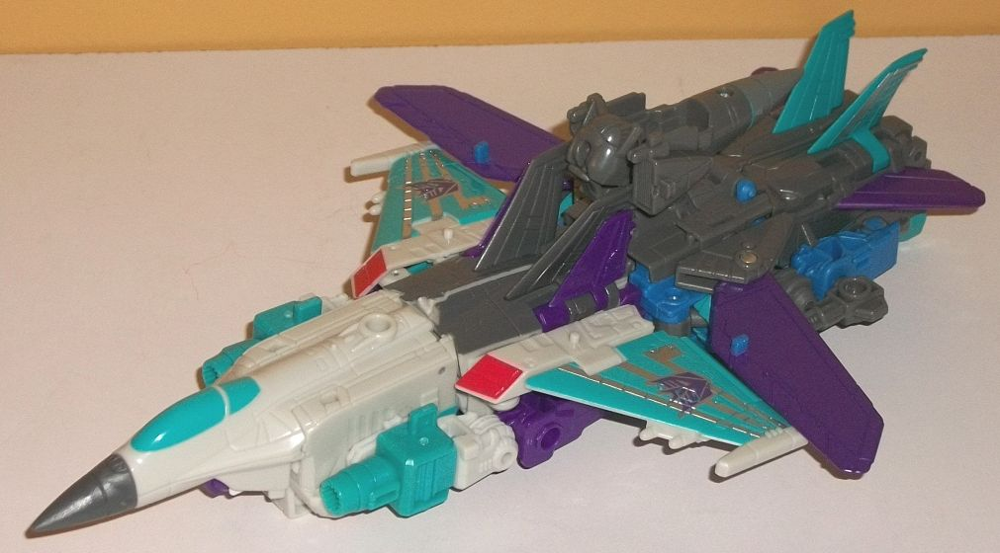
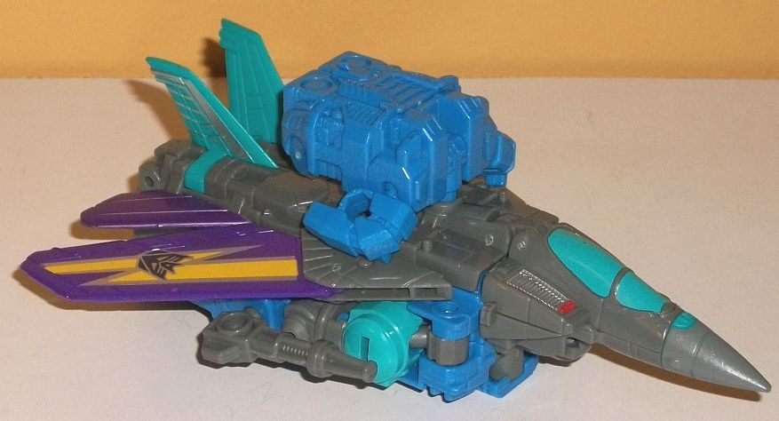
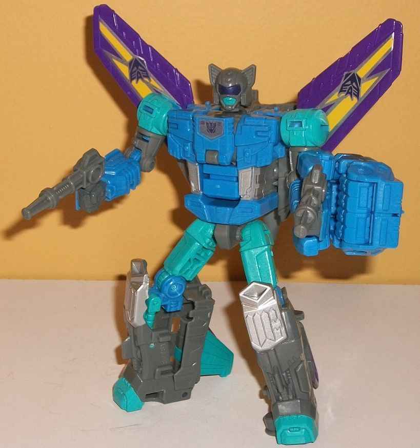
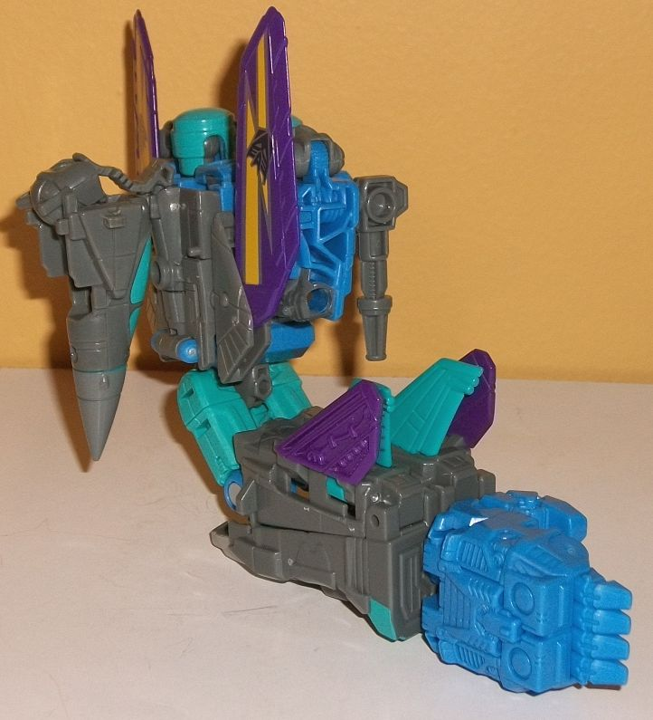
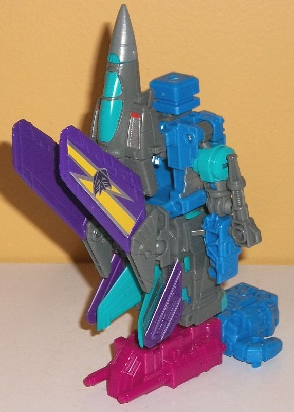
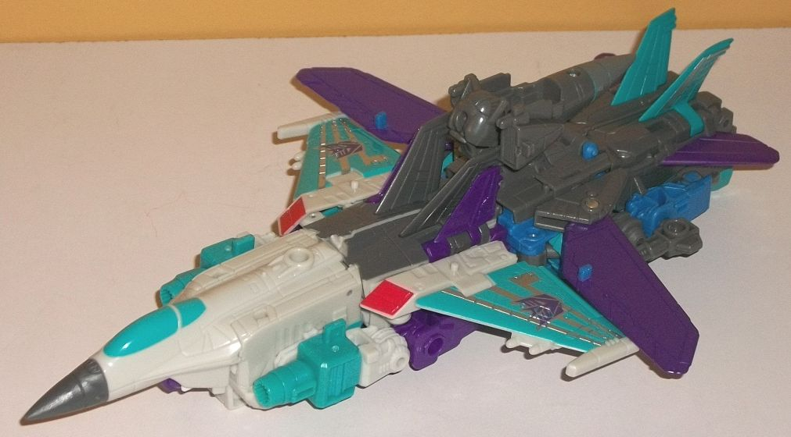

Difficulty of Transformation : Very Easy
Individual Rating : 3.2
Allegiance
: Decepticon
Size
: Deluxe
Difficulty of Transformation to Robot:
Easy
Difficulty of Transformation to Leg
:
Very Easy
Difficulty of Transformation to Arm
:
Very Easy
Color Scheme
: Gray, dull periwinkle,
dull seafoam green, royal purple, and some silver, red, and yellow
Individual Rating
: 8.6
(NOTE: Because this is a repaint, this is not a full-blown review. This mainly covers any changes made to the mold and the color scheme, and merely compares it to Combiner Wars Air Raid. For a review on the mold itself, read the review of Combiner Wars Air Raid here .)


Blackwing is a remold
of Combiner Wars Air Raid, and a fairly extensive one (although not SO
extensive you can't tell Air Raid was used as the base). In vehicle mode,
the new parts are the top middle section of the jet, as well as the main
wings. The nosecone piece has also been changed to allow Blackwing's head
to fit in it, so it's not as solid on the bottom-- and Blackwing's ears
stick out just a TEENSY bit, but it's a really minor issue. Anyways, the
reason the body of the jet has been changed is mostly so it can fold up
and back a bit for some of his various transformations, and so that his
wings can move around where they connect to the body-- see, this time around
the wings can still move forward-and-back like Air Raid's wings, but the
bits they're connected to are on ball joints, allowing for different positioning
in Blackwing's various other modes. The remolded jet body and wings have
some basic linear details on them-- and some "splayed out" lines on the
wings-- but generally isn't anything noteworthy. Two little rifles have
been added, which can be plugged into the sides of the main body. The remolding
has also left two ports on the top of the body, towards each side, which
you can peg on a Titan/Prime Master figure. The color scheme is definitely
late '80s-- the main body is a fairly straightforward gray shade, but the
wings are purple, with a cool painted lightning bolt zigzag going through
the main ones, and a Decepticon symbol then painted on top of those bolt
emblems. There's also quite a bit of seafoam green, used on the top tailfins,
the cockpit and another small detail on the nosecone, and on the robot
shoulders, which are pretty obvious in this mode. There's some striped
silver detailing on the seafoam green rear fins, but the silver doesn't
really contrast enough with such a light color to really be as apparent
as it otherwise would be. There's also a bit of silver-- and some red--
paint on the vent details on the sides of the nosecone. A bit of dull periwinkle
is apparent below the main body of the jet-- and on a couple of minor bits
like hinges-- but is largely kept to the robot mode, which I'll discuss
shortly. Overall it's a great scheme, with the purple, seafoam green, and
dull periwinkle contrasting and complementing each other very well, with
the gray working as a nice "neutral" color for everything to work off of.
The Prime Armor piece is also dull periwinkle, which can help break up
the gray on the body if you plug it into the top of this mode.
Blackwing mostly transforms
the same as Air Raid, though the head flips out of the nosecone and onto
the top of the main body this time around, with the nosecone just flipping
behind the back this time, instead of the nosecone jutting up behind the
head as on Air Raid. The wings also flip around on their ball joints and
point up in this mode, making the wings enhance Blackwing's silhouette
a bit more obviously. The other remolding bits made to the robot mode are
purely for aesthetic purposes. The shoulders are now rounded to be more
like Blackwing's G1 form, along with the middle portions of the arms. The
main body has also been completely re-done in terms of detailing, with
some ridged bits on the top of the chest and a couple of circles near the
bottom area of the chest, with some fairly generic details on the waist
and abs. The middle of the chest has been modified so you can flip it down
to reveal a peg hole, allowing you to both equip Blackwing's Prime Armor
on his chest if you so desire in this mode, and this whole bit (along with
an extra peg piece in the back-middle of the chest) also works to combine
Blackwing with Dreadwind to form Dreadwing (reviewed briefly below). The
headsculpt is of course new, and looks great-- with the bat-like vent ears
on the sides, the purple visor, the "normal" mouth painted seaform green,
and an otherwise round head, Blackwing looks like a costumed supervillain--
which of course fits his colors. And speaking of his colors, the breakup
is even better here than in vehicle mode. The dull periwinkle is much more
present on the main body now, and also on the lower arms and a few other
minor places. The gray is still on the lower legs, head, and parts of the
arms, but it's not AS apparent. The seafoam green on the upper legs, feet,
shoulders, and a few other small bits really works well with everything,
and of course those purple lightning-bolt wings frame everything beautifully.
As far as paint apps, beyond the ones already mentioned there's some gray
on the fists, seafoam green on the feet, and some silver on the knees,
abs, and middle of the chest. Blackwing has the same articulation in this
mode that Air Raid has.


Since the structure
of the lower body in robot mode is the same as on Air Raid, the structure
of the lower portion of the arm mode is the same here, as well (with the
difference being the new PotP "Prime Armor" hand compared to the Combiner
Wars hand). The upper portion is quite different, though; since the wings
now fan out to the sides, the normal robot arms instead hunch up against
the robot body both at the shoulders and then bend downwards at the elbows,
where the lower arms lock into place on a tab on the underside of the wings.
The combiner connection peg still comes out of the chest, but as opposed
to the jet nosecone hanging upwards on Air Raid but still back a bit behind
the body, this time it's unceremoniously folded back and downwards behind
the whole body, and a bit TOO far back to really work as "shoulder armor"
or anything of the sort, especially since Blackwing's head doesn't fit
all that well inside the jet nosecone piece if it's folded that far back.
So combine that bit just hanging back there with the regular robot arms
now in a more obvious position on the upper portion of the arm mode, and
design-wide this mode isn't too hot. Articulation-wise, Blackwing has the
"two-thumbed" PotP Prime Armor hand, but other than that he's got the same
movement in this mode as CW Air Raid.
I'll just straight-up
say it right up front; I do not like Blackwing's leg mode. Air Raid had
a pretty solid leg mode, but this version takes most of the positives of
that mode what with how it dealt with the wings and throws that out the
window. Yes, it still is mostly the vehicle mode but with the jet nosecone
folded up and back a bit and the combiner port rotated out in place, and
the robot arms still stick out a bit from the sides as they did on Air
Raid. However, the main wings on Air Raid stuck down and forward towards
the feet in a fairly undisruptive manner. When it comes to Blackwing, the
main wings instead fold forward AND up, and are on ball joints, so not
only does this look kinda odd sticking out so far from the front of the
knee as it does, but the jet wings aren't even secured in or anything--
they can move around just as much as anything on a ball joint can. It's
rather poor planning-- there HAD to be some way to keep Blackwing's other
gimmicks still intact but find a way to get those wings closer to the main
body and close up the obvious gap between the front and main portion that
can be seen when looking at the leg mode from the side.
PotP Blackwing is a great remold of an already pretty good Combiner Wars toy, even if the base mold itself has been used a LOT by now. Still, making the wings able to rotate and giving him some new robot parts and weapons helps mix up his look enough. His colors are the best part, popping in all the right places and really pegging him as a creation of the late '80s. He looks great by himself, though I'd get him just for Blackwing himself first and foremost. His limb modes aren't that great, and as for Dreadwing... well...
 Dreadwing
(Combined Form of Blackwing & Dreadwind)
Dreadwing
(Combined Form of Blackwing & Dreadwind)

Difficulty of Transformation
: Very
Easy
Individual Rating
: 3.2
Man, this is going to
be a short review. So in G1, you combined Blackwing &
Dreadwind
to form Dreadwing (their names were slightly different in G1, but the same
concept applied) by mostly just folding away Blackwing's cockpit and then
jamming the two together. The same is done here, only it's even MORE simple--
you just fold up and back the nosecone and head of Blackwing, flip out
a little peg piece, and then jam him into the rear of Dreadwind's alt mode.
Then you rotate the wings forward so that it looks more like the wings
of the two different bots form one big wing on each side-- even though
given the different shapes and colors, as well as the lack of any connection
points on the wings, they don't really work as "combined wings" at all.
The Blackwing head is BLATANTLY obvious just hanging up there in the center,
and Blackwing's nosecone hanging backwards there doesn't look much better.
Some of the colors like seafoam green and purple are present on both and
complement each other somewhat well, but they still look very much like
two very different toys that just happen to combine together, like some
kind of "fan mode" as opposed to anything official.
In short; Dreadwing
ain't worth it. It's a lazy combination with blatant extras and looks like
exactly what it is; two jets jammed together with minimal changes made.
Get the individual toys for the individual toys, not for this failure of
a mode.
Reviews by Beastbot